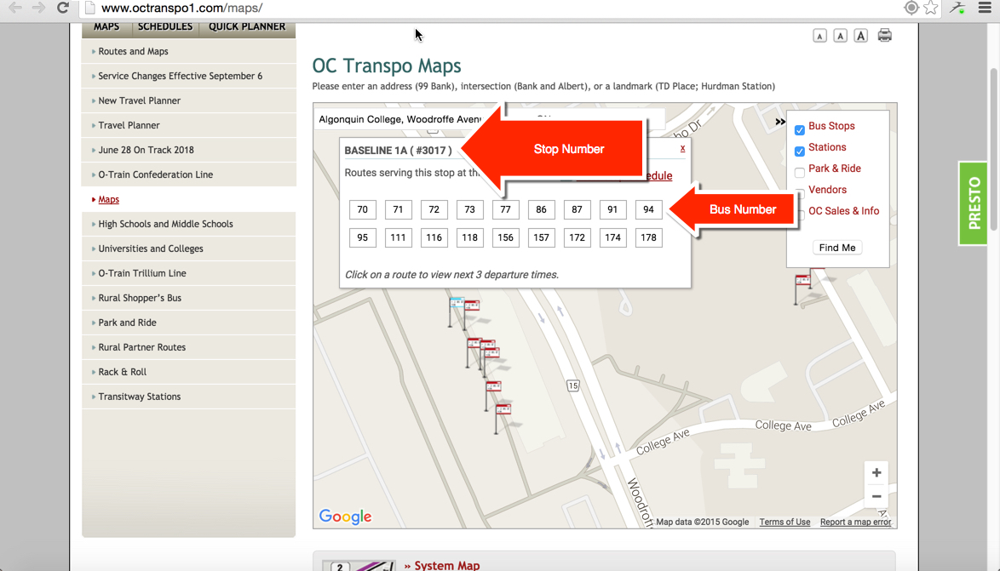

version 1.0
It is recommended that you read the entire lab before you start working.
What you will do:
The script lab5.py uses live data from the OC transpo web site to locate the next 3 buses to arrive at a bus stop number.
The function getOCdata() does the call to the OC transpo web site. In particular line 7 hard code information needed by the OC Transpo API:
- API id
- API key
- Bus stop number
- Route number
Right now, the function looks for bus stop #3017 and bus route #86, one of the routes to Algonquin.
You need to create your own version of the function getOCdata(). The new function of the function receives two parameters:
stopNo and routeNo
Line 7 then needs to be modified to use the two input parameters.
OC transpo stop numbers and route numbers can be found at the following web site: OC transpo maps

Once the function is modified, you modify the function doIt() to:
- Get the bus stop number from a user (before line 21)
- Get the route number from the user (before line 21).
- Call your version of the function with the the two arguments. (line 21 to modify)
Test your code for different route numbers and stop numbers .
Rubric |
|
| Criteria | Mark |
| Superior capability. Lab submitted meets or exceeds expected standards | 3 |
| Satisfactory capability, acceptable product/result | 2 |
| Marginal capability, substandard product/result | 1 |
| No capability, unacceptable product/result. Work not submitted | 0 |
Note that 40% of your final grade comes from the grades you obtained from your labs and assignments.